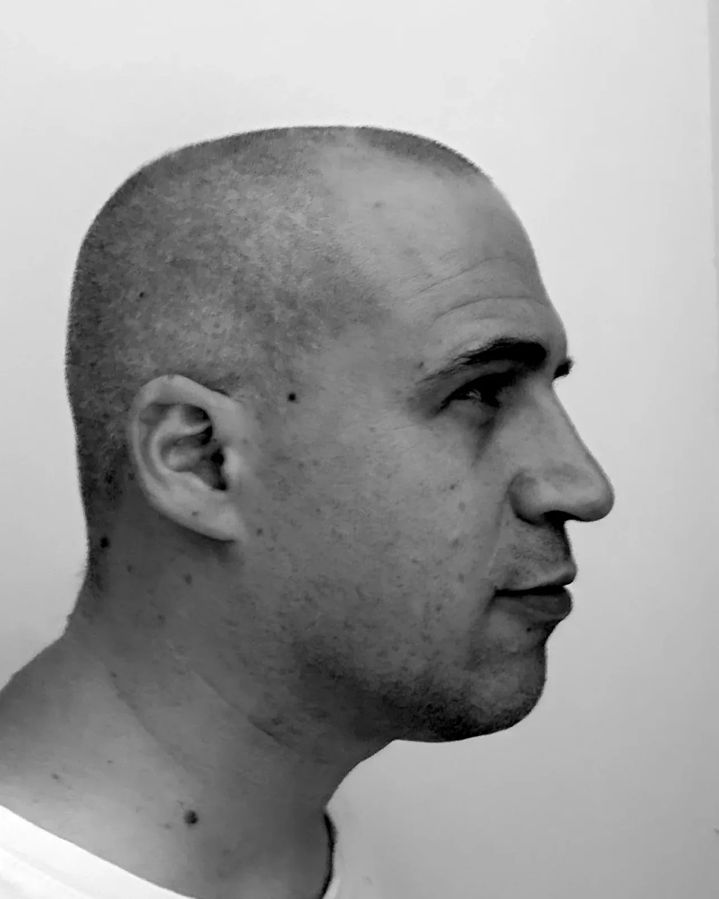
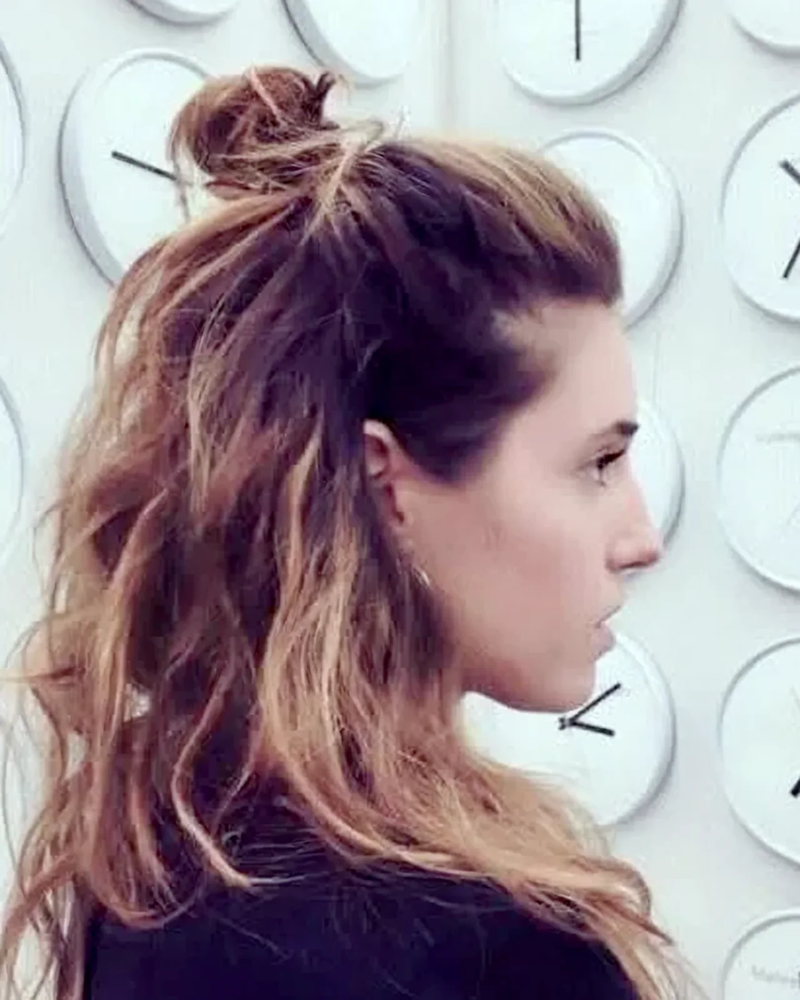

PRO-FILI Festival
Gli altri artisti

Marcello Ubertone
Cantautorato
Canzoni che raccontano storie, tra immaginazione e vita vera.

Anna Spazio Marangon
Arti visive · installazione
Installazioni di fili e nodi, tra spazio e materia.

Enrico Buoso
Musica e composizione
Intrecci di note e reti di persone.

Martino Prendini
Arti visive
Esplora con i sensi quello che non si scopre in altro modo.